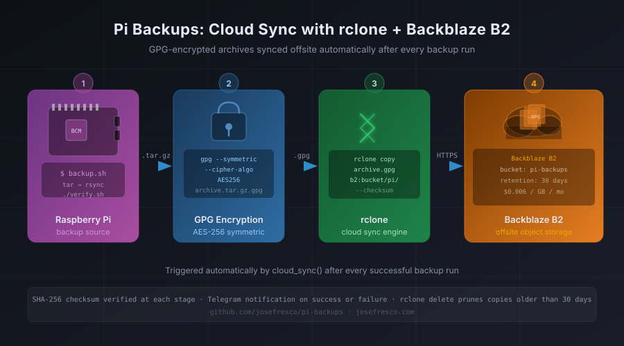

<!DOCTYPE html>
<html lang="en">
<head>
    <meta charset="UTF-8">
    <meta name="viewport" content="width=device-width, initial-scale=1.0">
    <title>Pi Backups: Cloud Sync with rclone and Backblaze B2 for True Offsite Redundancy - Jose Fresco</title>
    <meta name="description" content="How pi-backups adds rclone-based cloud sync to Backblaze B2 — uploading GPG-encrypted archives after each backup run, verifying upload integrity with checksums, and pruning old copies to stay within the free tier. True offsite redundancy in under 50 lines of shell.">
    <link rel="canonical" href="https://josefresco.com/blog/pi-backups-rclone-cloud-sync.html">
    <link rel="alternate" type="application/rss+xml" title="Jose Fresco Blog RSS" href="/feed.xml">
    <link rel="preconnect" href="https://fonts.googleapis.com">
    <link rel="preconnect" href="https://fonts.gstatic.com" crossorigin>
    <link href="https://fonts.googleapis.com/css2?family=Inter:wght@300;400;500;600;700&display=swap" rel="stylesheet">
    <link rel="stylesheet" href="../style.css">
    <link rel="stylesheet" href="blog.css">

    <!-- Resource Hints -->
    <link rel="dns-prefetch" href="//fonts.googleapis.com">
    <link rel="dns-prefetch" href="//fonts.gstatic.com">
    <link rel="dns-prefetch" href="//github.com">
    <link rel="preload" href="../script.js" as="script">

    <!-- Open Graph Tags -->
    <meta property="og:title" content="Pi Backups: Cloud Sync with rclone and Backblaze B2 for True Offsite Redundancy - Jose Fresco">
    <meta property="og:description" content="How pi-backups adds rclone-based cloud sync to Backblaze B2 — uploading GPG-encrypted archives after each backup run, verifying upload integrity with checksums, and pruning old copies to stay within the free tier.">
    <meta property="og:type" content="article">
    <meta property="og:url" content="https://josefresco.com/blog/pi-backups-rclone-cloud-sync.html">
    <meta property="og:image" content="https://josefresco.com/blog/images/pi-backups-rclone-cloud-sync.svg">
    <meta property="og:site_name" content="Jose Fresco">
    <meta property="og:locale" content="en_US">
    <meta property="article:published_time" content="2026-07-14T00:00:00+00:00">
    <meta property="article:modified_time" content="2026-07-14T00:00:00+00:00">
    <meta property="article:author" content="https://josefresco.com/">
    <meta property="article:section" content="Raspberry Pi">

    <!-- Twitter Card Tags -->
    <meta name="twitter:card" content="summary_large_image">
    <meta name="twitter:title" content="Pi Backups: Cloud Sync with rclone and Backblaze B2 for True Offsite Redundancy - Jose Fresco">
    <meta name="twitter:description" content="How pi-backups adds rclone-based cloud sync to Backblaze B2 — uploading GPG-encrypted archives after each backup run, verifying upload integrity with checksums, and pruning old copies to stay within the free tier.">
    <meta name="twitter:image" content="https://josefresco.com/blog/images/pi-backups-rclone-cloud-sync.svg">

    <!-- Schema.org Structured Data -->
    <script type="application/ld+json">
    {
      "@context": "https://schema.org",
      "@type": "BlogPosting",
      "mainEntityOfPage": {
        "@type": "WebPage",
        "@id": "https://josefresco.com/blog/pi-backups-rclone-cloud-sync.html"
      },
      "headline": "Pi Backups: Cloud Sync with rclone and Backblaze B2 for True Offsite Redundancy",
      "description": "How pi-backups adds rclone-based cloud sync to Backblaze B2 — uploading GPG-encrypted archives after each backup run, verifying upload integrity with checksums, and pruning old copies to stay within the free tier. True offsite redundancy in under 50 lines of shell.",
      "image": "https://josefresco.com/blog/images/pi-backups-rclone-cloud-sync.svg",
      "author": {
        "@type": "Person",
        "name": "Jose Fresco",
        "url": "https://josefresco.com/"
      },
      "publisher": {
        "@type": "Person",
        "name": "Jose Fresco",
        "url": "https://josefresco.com/",
        "logo": {
          "@type": "ImageObject",
          "url": "https://josefresco.com/favicon.ico"
        }
      },
      "datePublished": "2026-07-14T00:00:00+00:00",
      "dateModified": "2026-07-14T00:00:00+00:00",
      "keywords": "Raspberry Pi, rclone, Backblaze B2, Cloud Backup, Shell Scripting, Offsite Storage, GPG Encryption, Backup Automation, pi-backups, Object Storage, SHA-256, Telegram",
      "articleSection": "Raspberry Pi",
      "inLanguage": "en-US"
    }
    </script>
    <script type="application/ld+json">
    {
      "@context": "https://schema.org",
      "@type": "BreadcrumbList",
      "itemListElement": [
        {"@type": "ListItem", "position": 1, "name": "Home", "item": "https://josefresco.com/"},
        {"@type": "ListItem", "position": 2, "name": "Blog", "item": "https://josefresco.com/blog/"},
        {"@type": "ListItem", "position": 3, "name": "Pi Backups: Cloud Sync with rclone and Backblaze B2", "item": "https://josefresco.com/blog/pi-backups-rclone-cloud-sync.html"}
      ]
    }
    </script>
</head>
<body>
    <a href="#main-content" class="skip-link">Skip to main content</a>

    <div class="neural-bg">
        <div class="neural-nodes"></div>
    </div>

    <header class="header">
        <nav class="nav">
            <div class="nav-brand">
                <a href="/" style="text-decoration: none; color: inherit;">
                    <span class="nav-logo">JF</span>
                    <span class="nav-name">Jose Fresco</span>
                </a>
            </div>
            <div class="nav-menu-toggle" id="mobile-menu-toggle">
                <span class="hamburger-line"></span>
                <span class="hamburger-line"></span>
                <span class="hamburger-line"></span>
            </div>
            <div class="nav-links" id="nav-links">
                <a href="/about" class="nav-link">About</a>
                <a href="/projects" class="nav-link">Projects</a>
                <a href="/blog" class="nav-link">Blog</a>
                <a href="/skills" class="nav-link">Skills</a>
                <a href="/ai-tools" class="nav-link">AI Tools</a>
                <a href="/now" class="nav-link">Now</a>
                <a href="/contact" class="nav-link">Contact</a>
                <a href="/contact" class="btn-cta btn-cta-nav">Hire Me</a>
            </div>
        </nav>
    </header>

    <main id="main-content">
        <section class="blog-post">
            <div class="container">
                <div class="blog-post-header">
                    <h1 class="blog-post-title">Pi Backups: Cloud Sync with rclone and Backblaze B2 for True Offsite Redundancy</h1>
                    <div class="blog-post-meta">
                        <span class="blog-category">Raspberry Pi</span>
                        <span class="blog-date">July 2026</span>
                    </div>
                </div>

                <div class="blog-post-image">
                    <picture>
                        <source srcset="images/pi-backups-rclone-cloud-sync.svg" type="image/svg+xml">
                        
                    </picture>
                </div>

                <div class="blog-post-content">
                    <div class="tldr" style="background: rgba(26, 29, 41, 0.8); padding: 1rem; margin: 1rem 0; border-left: 4px solid var(--neural-primary); color: var(--text-secondary);">
                        <strong style="color: var(--text-primary);">TL;DR:</strong> The latest <a href="https://github.com/josefresco/pi-backups" style="color: var(--neural-primary);" target="_blank" rel="noopener">pi-backups</a> update adds a <code>cloud_sync()</code> function that calls <code>rclone copy</code> to push each GPG-encrypted archive to a Backblaze B2 bucket immediately after the local backup run completes. Upload integrity is verified with <code>--checksum</code>, old copies are pruned with <code>rclone delete --min-age 30d</code>, and the result — success, skip, or failure — is reported through the existing Telegram notification pipeline. The entire cloud sync layer is under 50 lines of shell, costs roughly $0.006 per GB per month, and requires no changes to the existing backup or encryption logic.
                    </div>

                    <h2>Why "Offsite" Needs a Second Definition</h2>

                    <p>The <a href="/blog/pi-backups-raspberry-pi.html" style="color: var(--neural-primary);">first pi-backups post</a> automated rsync to a second machine on the same local network. The <a href="/blog/pi-backups-encryption.html" style="color: var(--neural-primary);">encryption post</a> wrapped those archives in AES-256 GPG before they left the Pi. The <a href="/blog/pi-backups-telegram-alerts.html" style="color: var(--neural-primary);">Telegram post</a> wired up push notifications so every backup outcome lands on your phone. Each of those improvements made the system more robust — but they all share the same failure mode: a house fire, a flood, a stolen router, or a power surge that kills multiple devices takes out both the source machine and the backup destination simultaneously.</p>

                    <p>True offsite redundancy means the backup copy is in a different physical location, controlled by a different organization, reachable over the public internet. For a Raspberry Pi running home automation or a family dashboard, the right destination isn't another device in the same building — it's an object storage bucket in a data center somewhere else entirely.</p>

                    <p>The question is how to get encrypted archives there without adding a fragile custom HTTP client, a heavyweight SDK, or a cloud provider's proprietary CLI with its own update cadence. The answer is <a href="https://rclone.org" style="color: var(--neural-primary);" target="_blank" rel="noopener">rclone</a> — a single binary that speaks the API of more than 70 cloud storage providers and integrates cleanly into existing shell scripts.</p>

                    <h2>Why rclone Over Native Provider CLIs</h2>

                    <p>Backblaze B2, AWS S3, Cloudflare R2, and Google Cloud Storage all ship their own CLI tools. The Backblaze CLI is <code>b2</code>; AWS ships <code>aws s3</code>. Each works fine in isolation — but each also means committing to that provider's tooling, authentication model, and documentation forever. Switching from B2 to R2 to save costs in six months means rewriting the upload logic.</p>

                    <p>rclone abstracts all of that. The shell script calls <code>rclone copy</code> regardless of the destination. The provider configuration lives in <code>~/.config/rclone/rclone.conf</code>, not in the script. Switching from B2 to R2 means updating the config file and changing one remote name — the backup script itself doesn't change.</p>

                    <p>rclone also handles the details that matter in a backup context: checksum verification after upload, retry on transient failures, bandwidth throttling to avoid saturating a home internet connection during a large transfer, and parallel chunk uploads for files over a configurable size threshold. These are all things you'd need to implement yourself if you wrote HTTP calls directly.</p>

                    <h2>Setting Up Backblaze B2</h2>

                    <p>Backblaze B2 is the right choice for this workload: $0.006 per GB per month for storage, free egress to Cloudflare (if you proxy through it), and a 10 GB free tier that covers most Pi backup scenarios entirely. The setup is three steps.</p>

                    <p>First, create a bucket in the B2 dashboard. Name it something specific — <code>pi-backups-[yourname]</code> — and set it to private. Private means files are not publicly readable; they require an application key to access. Leave the default file lock settings off for now.</p>

                    <p>Second, create an application key scoped to that bucket only. In the B2 dashboard, go to "App Keys" and create a new key with read and write permissions limited to your bucket. Copy the <code>keyID</code> and <code>applicationKey</code> values — B2 shows the application key exactly once, at creation time. These become environment variables in the backup script, not hardcoded strings.</p>

                    <p>Third, install rclone on the Pi and configure the B2 remote:</p>

                    <pre><code># Install rclone (one-liner, installs to /usr/local/bin)
curl https://rclone.org/install.sh | sudo bash

# Configure the B2 remote interactively
rclone config

# In the interactive prompt:
#   n) New remote
#   name: b2
#   Storage: 6 (Backblaze B2)
#   account: [your keyID]
#   key: [your applicationKey]
#   Leave other settings as default

# Verify the connection
rclone lsd b2:pi-backups-yourname</code></pre>

                    <p>The interactive <code>rclone config</code> wizard stores credentials in <code>~/.config/rclone/rclone.conf</code>. For a Pi running headlessly, you can also write the config file directly — but the interactive flow handles the provider-specific nuances and is easier to audit.</p>

                    <h2>The cloud_sync() Function</h2>

                    <p>The new function lives at the bottom of <code>backup.sh</code>, after the existing <code>tg_notify()</code> and <code>run_step()</code> functions. It takes a single argument: the path to the GPG-encrypted archive that was just created.</p>

                    <pre><code>CLOUD_REMOTE="${CLOUD_REMOTE:-b2:pi-backups-yourname}"
CLOUD_RETENTION_DAYS="${CLOUD_RETENTION_DAYS:-30}"

cloud_sync() {
    local archive="$1"
    local filename
    filename="$(basename "$archive")"
    local log_entry

    if [[ -z "$RCLONE_BIN" ]]; then
        RCLONE_BIN="$(command -v rclone 2>/dev/null)"
    fi

    if [[ -z "$RCLONE_BIN" ]]; then
        log_entry="CLOUD_SKIP rclone not found in PATH"
        echo "$log_entry" >> "$LOG_FILE"
        tg_notify "⚠️ Cloud sync skipped — rclone not installed" "warning"
        return 0
    fi

    log_entry="CLOUD_START $(date -u +%Y-%m-%dT%H:%M:%SZ) $filename"
    echo "$log_entry" >> "$LOG_FILE"

    # Upload with checksum verification
    if "$RCLONE_BIN" copy \
        --checksum \
        --stats-log-level NOTICE \
        --log-file "$LOG_FILE" \
        "$archive" \
        "$CLOUD_REMOTE/$(hostname)/"; then

        local remote_size
        remote_size="$("$RCLONE_BIN" size --json "$CLOUD_REMOTE/$(hostname)/$filename" \
            2>/dev/null | python3 -c 'import sys,json; d=json.load(sys.stdin); print(d.get("bytes",0))' \
            2>/dev/null || echo 0)"

        echo "CLOUD_OK $(date -u +%Y-%m-%dT%H:%M:%SZ) $filename ${remote_size}b" >> "$LOG_FILE"
        tg_notify "☁️ Cloud sync OK: $filename (${remote_size} bytes in $CLOUD_REMOTE)" "success"

        # Prune old copies
        "$RCLONE_BIN" delete \
            --min-age "${CLOUD_RETENTION_DAYS}d" \
            "$CLOUD_REMOTE/$(hostname)/" \
            >> "$LOG_FILE" 2>&1 || true
    else
        local exit_code=$?
        echo "CLOUD_FAIL $(date -u +%Y-%m-%dT%H:%M:%SZ) $filename exit=$exit_code" >> "$LOG_FILE"
        tg_notify "❌ Cloud sync FAILED: $filename (exit $exit_code)" "failure"
        return 1
    fi
}</code></pre>

                    <p>Three design decisions are worth explaining. First, the function checks for rclone at runtime rather than failing hard at script load time. If rclone isn't installed — during initial deployment, or on a Pi that only runs local backups — the script skips cloud sync gracefully and sends a warning notification instead of exiting with a non-zero code that would mark the whole backup as failed.</p>

                    <p>Second, <code>--checksum</code> tells rclone to verify the upload by comparing SHA-256 checksums before and after transfer, not just file sizes. Size-only comparison catches truncation but misses bit-flip corruption during transfer. Checksum comparison catches both. The trade-off is a second API call to retrieve the remote checksum after upload — negligible for backup-sized files.</p>

                    <p>Third, the pruning step uses <code>|| true</code> to prevent a failed prune from marking the sync as failed. A prune failure means old files linger longer than intended — annoying but not dangerous. A sync success followed by a prune failure should still report success, because the important thing (the new backup is in the cloud) happened correctly.</p>

                    <h2>Wiring cloud_sync() Into the Main Backup Flow</h2>

                    <p>The existing backup flow in <code>backup.sh</code> runs in three phases: <code>create_archive()</code> compresses the source directory into a <code>.tar.gz</code>, <code>encrypt_archive()</code> wraps it in GPG and deletes the unencrypted intermediate, and <code>sync_local()</code> rsync's the <code>.gpg</code> file to the local backup destination. The new <code>cloud_sync()</code> call slots in after <code>sync_local()</code> completes successfully:</p>

                    <pre><code>main() {
    local job_name="$1"
    local source_dir="$2"
    local archive dest gpg_archive exit_code=0

    log_start "$job_name"

    # Phase 1: compress
    archive="$(run_step "archive" create_archive "$job_name" "$source_dir")" \
        || { notify_failure "$job_name" "archive" $?; return 1; }

    # Phase 2: encrypt (deletes plaintext archive on success)
    gpg_archive="$(run_step "encrypt" encrypt_archive "$archive")" \
        || { notify_failure "$job_name" "encrypt" $?; return 1; }

    # Phase 3: rsync to local destination
    run_step "sync_local" sync_local "$gpg_archive" \
        || { notify_failure "$job_name" "sync_local" $?; return 1; }

    # Phase 4: cloud sync (non-fatal — local backup already succeeded)
    if [[ "${CLOUD_SYNC_ENABLED:-true}" == "true" ]]; then
        cloud_sync "$gpg_archive" || exit_code=2
    fi

    log_end "$job_name" "$exit_code"
    [[ $exit_code -eq 0 ]] && tg_notify "✅ Backup complete: $job_name" "success"
    return $exit_code
}</code></pre>

                    <p>The <code>exit_code=2</code> convention distinguishes a cloud sync failure (exit 2) from a local backup failure (exit 1). The weekly digest script — added in the <a href="/blog/pi-backups-telegram-alerts.html" style="color: var(--neural-primary);">Telegram alerts post</a> — reads the log file and can report cloud sync outcomes separately from local backup outcomes. Exit code 2 shows up in the log as a warning rather than a failure, so the job doesn't get flagged as broken in the digest when the local backup succeeded but B2 was temporarily unreachable.</p>

                    <h2>Bandwidth Throttling for Home Connections</h2>

                    <p>The default rclone behavior is to upload as fast as the connection allows. For a large backup — say, the Family Dashboard data directory plus application configs, compressed to 800 MB — an unthrottled upload on a typical home connection will saturate the uplink for several minutes. If the backup runs at 2 AM, that's fine. If it runs during the day while others are on video calls, it's a problem.</p>

                    <p>rclone's <code>--bwlimit</code> flag accepts a bandwidth cap in bytes per second, or a timetable syntax that applies different limits at different times of day:</p>

                    <pre><code># In rclone.conf, under [b2], or as a flag in the shell script:
# --bwlimit "08:00,512k 00:00,off"
#
# Meaning:
#   From 08:00 to midnight: limit to 512 KB/s (~4 Mbps)
#   From midnight to 08:00: no limit
#
# Adjust thresholds to match your uplink and schedule.

"$RCLONE_BIN" copy \
    --checksum \
    --bwlimit "08:00,512k 00:00,off" \
    "$archive" \
    "$CLOUD_REMOTE/$(hostname)/"</code></pre>

                    <p>The timetable string is evaluated against the Pi's local clock, so it's time-zone-aware as long as the Pi's timezone is correctly configured. For most Pi setups, that means checking <code>timedatectl</code> and ensuring NTP sync is active — both of which the pi-backups README covers in the prerequisites section.</p>

                    <h2>The Retention Policy and Cost Model</h2>

                    <p>The <code>CLOUD_RETENTION_DAYS</code> variable defaults to 30. After each successful upload, <code>rclone delete --min-age 30d</code> removes any files in the remote subdirectory older than 30 days. Combined with the local rsync destination — which keeps its own copy under a separate retention policy — this gives a two-layer recovery window: local copies go back as far as local disk allows, cloud copies go back 30 days from a geographically separate location.</p>

                    <p>At Backblaze B2's $0.006 per GB per month rate, the math is straightforward. If the compressed, encrypted daily backup for a typical Pi setup is 200 MB, and you're keeping 30 days:</p>

                    <pre><code># Storage cost estimate:
# 200 MB/day × 30 days = 6,000 MB = ~5.86 GB
# 5.86 GB × $0.006/GB/mo = ~$0.035/month
#
# Well within the 10 GB free tier if your backups
# are under 333 MB/day compressed.
#
# Download egress: $0.01/GB (first 1 GB/day free).
# Restore costs are near-zero for occasional use.</code></pre>

                    <p>For most home Pi setups, the entire cloud storage cost is zero — the 10 GB free tier covers it. Even a larger setup with multiple backup jobs is likely to stay under $0.50/month. The cost objection to cloud backup disappears at this price point; the only remaining objection is complexity, which the <code>cloud_sync()</code> function is designed to eliminate.</p>

                    <h2>Verifying the Cloud Copy Independently</h2>

                    <p>A backup you haven't verified is a backup you don't have. The existing <code>verify.sh</code> script (added in the encryption post) tests that the local GPG archive decrypts correctly and that the tar contents are intact. For the cloud copy, verification requires a second script that pulls a file from B2 and runs the same checks:</p>

                    <pre><code">#!/usr/bin/env bash
# verify-cloud.sh — verify the most recent cloud backup for a job
# Usage: ./verify-cloud.sh [job-name]
set -euo pipefail

JOB="${1:-}"
CLOUD_REMOTE="${CLOUD_REMOTE:-b2:pi-backups-yourname}"
VERIFY_DIR="/tmp/pi-backup-cloud-verify-$$"
trap 'rm -rf "$VERIFY_DIR"' EXIT

mkdir -p "$VERIFY_DIR"

# Find the most recent .gpg file for this job
echo "Listing remote files for: $(hostname)/$JOB"
REMOTE_FILE="$("$RCLONE_BIN" lsf \
    --format "tp" \
    --files-only \
    "$CLOUD_REMOTE/$(hostname)/" \
    | grep "${JOB:-}" \
    | sort -r \
    | head -1 \
    | awk '{print $2}')"

if [[ -z "$REMOTE_FILE" ]]; then
    echo "ERROR: no remote file found for job '$JOB'" >&2
    exit 1
fi

echo "Downloading: $REMOTE_FILE"
"$RCLONE_BIN" copy --checksum \
    "$CLOUD_REMOTE/$(hostname)/$REMOTE_FILE" \
    "$VERIFY_DIR/"

LOCAL_COPY="$VERIFY_DIR/$REMOTE_FILE"
echo "Verifying GPG decrypt..."
gpg --decrypt --batch \
    --passphrase-fd 3 \
    "$LOCAL_COPY" 3<<<"$GPG_PASSPHRASE" \
    | tar -tzf - > /dev/null

echo "✅ Cloud verify OK: $REMOTE_FILE"</code></pre>

                    <p>This script is designed to run manually — not on a cron — as an occasional sanity check rather than a daily automated step. Running it once after initial setup confirms that the upload, the checksum, and the decryption chain all work end-to-end. Running it again after a configuration change confirms that nothing broke. It doesn't need to run on every backup; the <code>--checksum</code> flag in <code>cloud_sync()</code> already verifies upload integrity automatically.</p>

                    <h2>Telegram Notifications for Cloud Events</h2>

                    <p>The <code>tg_notify()</code> function added in the Telegram alerts post supports a message type argument: <code>"success"</code>, <code>"failure"</code>, and <code>"warning"</code>. Cloud sync events use all three:</p>

                    <ul>
                        <li><code>☁️ Cloud sync OK: job-name-2026-07-14.tar.gz.gpg (204847616 bytes in b2:pi-backups-yourname)</code> — sent on successful upload</li>
                        <li><code>❌ Cloud sync FAILED: job-name-2026-07-14.tar.gz.gpg (exit 6)</code> — sent when rclone exits non-zero (rclone exit code 6 means connection error; 3 means directory not found)</li>
                        <li><code>⚠️ Cloud sync skipped — rclone not installed</code> — sent when rclone is absent, so a missing install doesn't go unnoticed</li>
                    </ul>

                    <p>The Telegram message for a successful day looks like this in practice:</p>

                    <pre><code>✅ Backup complete: family-dash
   Archive: family-dash-2026-07-14T020001.tar.gz.gpg
   Size: 195 MB (compressed)
   Local sync: OK (0:42 elapsed)
   ☁️ Cloud sync: OK → b2:pi-backups-yourname/pi-home/
   Retention: pruned 0 files older than 30 days</code></pre>

                    <p>The weekly digest script accumulates cloud sync outcomes alongside local backup outcomes. A week where cloud sync failed on Tuesday but succeeded every other day shows up as six green rows and one yellow row in the digest table — granular enough to notice without being alarming.</p>

                    <h2>Migration Guide from the Previous Version</h2>

                    <p>Updating from the Telegram alerts version of pi-backups to this version involves three steps and no changes to existing backup jobs.</p>

                    <p>First, install rclone and configure the B2 remote as described above. The install and <code>rclone config</code> steps are one-time operations; they don't need to be automated.</p>

                    <p>Second, add two environment variables to the <code>.env</code> file that the backup script sources:</p>

                    <pre><code"># .env — add these two lines
CLOUD_REMOTE="b2:pi-backups-yourname"
CLOUD_RETENTION_DAYS="30"

# Optional: disable cloud sync for specific environments
# CLOUD_SYNC_ENABLED="false"</code></pre>

                    <p>Third, pull the updated <code>backup.sh</code> from the repository. The <code>cloud_sync()</code> function and the updated <code>main()</code> flow are the only changes. The rest of the script — the archive, encrypt, and local sync phases — is unchanged. Existing job configurations, log paths, and Telegram credentials carry over without modification.</p>

                    <p>If you're not ready to set up B2 yet, set <code>CLOUD_SYNC_ENABLED="false"</code> in your <code>.env</code>. The backup runs exactly as before; the cloud sync step is skipped entirely. You can enable it later when the B2 setup is ready without touching the backup logic.</p>

                    <h2>What the Four-Post Arc Covers Now</h2>

                    <p>The pi-backups repository has grown through four iterations, each adding one layer of resilience:</p>

                    <ul>
                        <li><strong>v1 — Automation:</strong> <code>tar</code> + <code>rsync</code> + cron. Daily archives to a local destination, no manual steps.</li>
                        <li><strong>v2 — Encryption:</strong> GPG AES-256 before the archive leaves the Pi. Even if the destination is compromised, the files are unreadable.</li>
                        <li><strong>v3 — Observability:</strong> Telegram notifications on every run outcome plus a weekly health digest. Problems surface on your phone, not in a log file nobody reads.</li>
                        <li><strong>v4 — True offsite:</strong> rclone to Backblaze B2. A building-level failure no longer takes out both the source and the only backup copy.</li>
                    </ul>

                    <p>Each layer was added independently; the script at each stage was complete and useful without the next one. That's the design philosophy behind pi-backups: every increment ships something that works by itself, so the project doesn't require buying into the full stack before you get value out of it.</p>

                    <p>The repository is at <a href="https://github.com/josefresco/pi-backups" target="_blank" rel="noopener" style="color: var(--neural-primary);">github.com/josefresco/pi-backups</a>. The new code is in <code>backup.sh</code> and <code>verify-cloud.sh</code>. The README has been updated with the rclone prerequisite, B2 setup steps, and the environment variable reference.</p>
                </div>

                <div class="blog-navigation">
                    <a href="/blog/pi-backups-telegram-alerts.html" class="btn-secondary">← Pi Backups: Telegram Alerts</a>
                    <a href="https://github.com/josefresco/pi-backups" target="_blank" rel="noopener" class="btn-primary">View on GitHub →</a>
                </div>
            </div>
        </section>
    </main>

    <button class="theme-toggle" id="theme-toggle" aria-label="Toggle dark/light theme" title="Toggle theme">🌙</button>

    <section class="cta-section">
        <div class="container">
            <div class="cta-content">
                <h2 class="cta-title">Need Reliable Offsite Backup for Your Raspberry Pi Project?</h2>
                <p class="cta-description">
                    Encrypted archives, Telegram alerts, and cloud sync to Backblaze B2 — all in a self-contained shell script
                    with no subscription fees or vendor lock-in. Let's talk about automating the boring parts of your Pi setup.
                </p>
                <div class="cta-buttons">
                    <a href="mailto:josefresco@gmail.com?subject=Raspberry Pi Automation Inquiry&body=Hi Jose,%0D%0A%0D%0AI read your pi-backups rclone post and I'm interested in setting up automated backups for my Raspberry Pi project.%0D%0A%0D%0AProject details:%0D%0A%0D%0ABest regards," class="btn-cta">
                        Start a Conversation
                    </a>
                    <a href="/projects" class="btn-secondary">View More Projects</a>
                </div>
            </div>
        </div>
    </section>

    <footer class="footer">
        <div class="container">
            <div class="footer-content">
                <p>&copy; 2026 Jose Fresco. Built with modern web technologies.</p>
                <div class="footer-links">
                    <a href="https://github.com/josefresco" target="_blank" rel="noopener">GitHub</a>
                    <a href="/contact">Contact</a>
                    <a href="/feed.xml">RSS Feed</a>
                </div>
            </div>
        </div>
    </footer>

    <script src="../global-header.js" defer></script>
    <script src="../script.js" defer></script>
</body>
</html>
